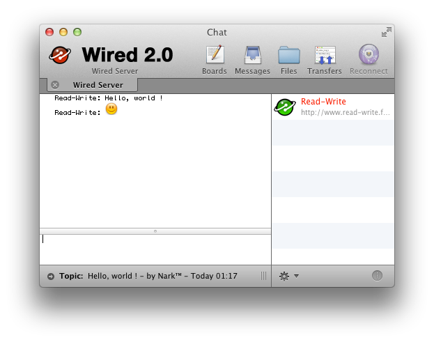

Wired
Wired is an open, modern and free version of the BBS-style client/server system, providing chat, boards, messaging and file transfers. Read-Write currently maintains the protocol standard, as well as server and client implementations.

Wired was initially started by Axel Andersson at Zanka Software in 2003 as an alternate solution to other discontinued BBS software (Hotline, Carracho, KDX). The project is currently managed by Read-Write.fr in order to continue to develop and maintain the software suite and the Wired specifications.
Open Standards
Wired is built using open standards, and is an open standard itself. The protocol specification and the source code are open for all to see, allowing developers to create their own versions, ports or improvements.
Unicode
As the only character set available, Wired uses Unicode for all textual communication. This allows seamless integration of every single existing written language in all of Wired's chat and messages. Now you can finally host that Klingon server you've always wanted.
Strong Encryption
Wired uses the TLS protocol for encrypted transport, supporting the use of a wide range of strong encryption ciphers. For example, Wired can use the 256-bit Advanced Encryption Standard (AES) cipher. The server administrator controls what ciphers are available to clients, and can even enable the use of no cipher at all, for those cases where the environment already is secure.
Unix Server
The Wired server is written as a portable Unix server, so it can run as a background service on Mac OS X, BSD and others. But don't let that intimidate you, the Mac OS X version includes an easy-to-use System Preferences pane. Most of the administration is done via the client anyway.
The Wired Software suite is composed of several programs for UNIX and Mac OSX systems.